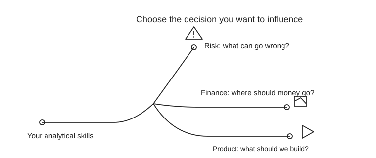

Your strongest bridge: finance analytics → decision ownership
Prioritize finance business analytics, investment-risk analytics, or financial-services AI product work. These can use Python, SQL and ML while bringing you closer to budget, portfolio or product decisions. Ask who consumes your analysis and which decision you will own.
Pure quant research is a credible stretch if you enjoy technical research, but often rewards deep technical specialization. FP&A / strategic finance and fintech product strategy suit people who enjoy presentations, stakeholders and business choices.
Positioning: “I build reliable AI and analytical systems, understand their limitations, and translate evidence into financial decisions.” CFA I supports that story; projects and stakeholder impact prove it.
